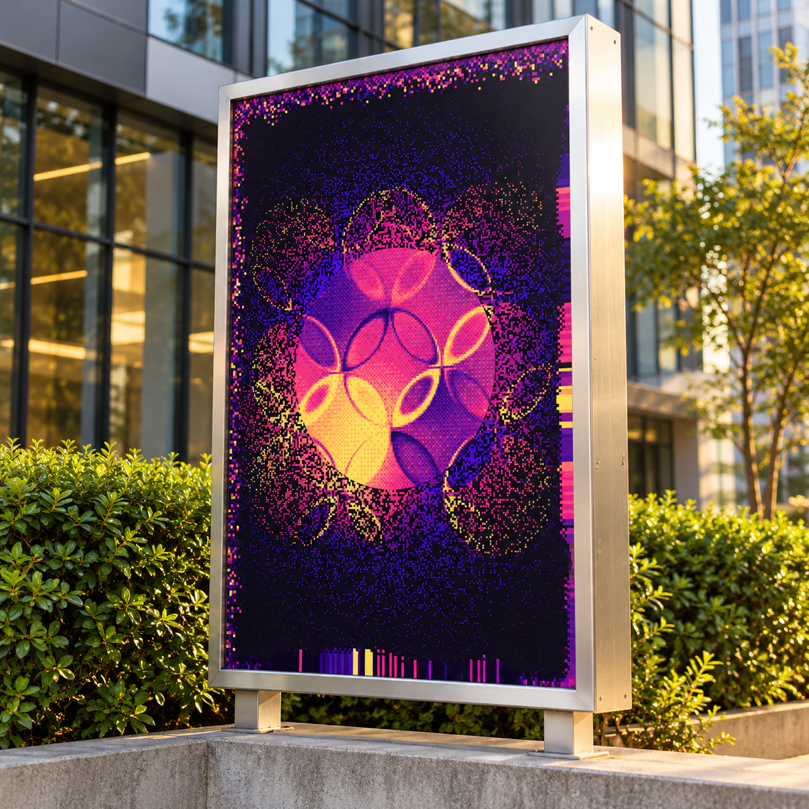
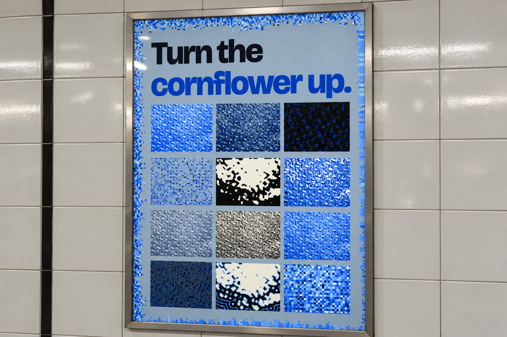

How simple can a picture get? Make the squares bigger and it gets simpler. Swap a thousand colours for ten and it gets simpler again.
Built a tool that finds the point just before a picture stops being itself, then a brand, sixteen posters and a zine that look like it.






At some point it stops being the picture, and just before that it is at its most interesting.
Try Squint →